|
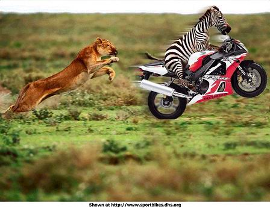 2。经常保持微笑 / Smile more 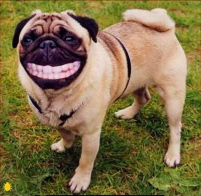 3。学会和别人一块分享喜悦 / Share happiness 4。乐于助人 / Ready to help others 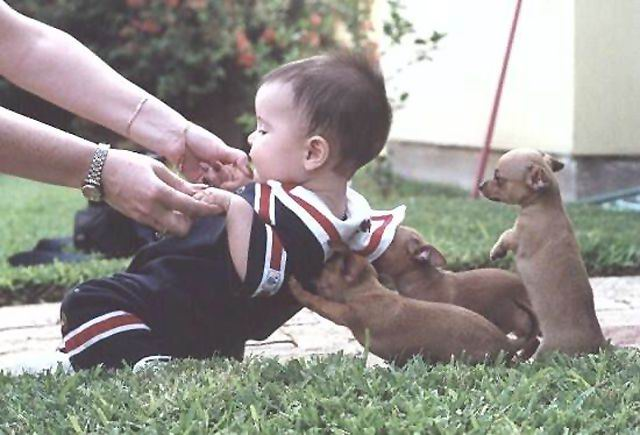 5。并保持自己的一颗童心 / Have a young heart 6。学会和各种人愉快的相处 / Harmony with all kinds 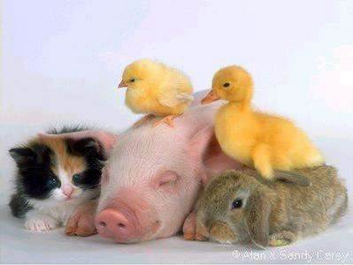 7。保持幽默感 / Have a good sense of humor 8。要能处乱不惊 / Stay calm in all situations 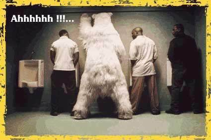 9。学会宽恕他人 / Willing to forgive 10。有几个知心朋友 / Make true friends 11。常和别人保持合作,并从中获得乐趣 / Collaborate with others and enjoy it 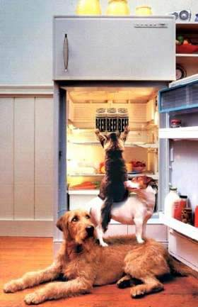 12。享受你的天伦之乐 / Enjoy the family 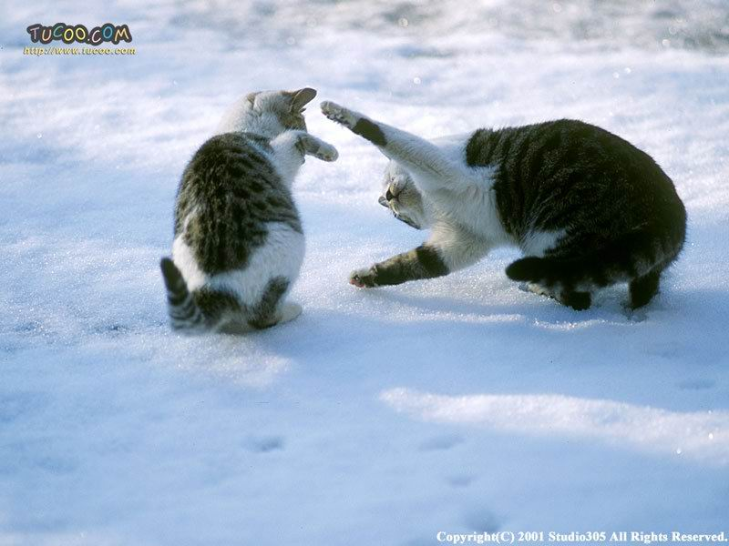 13。保持高度的自信心 / Believe in yourself 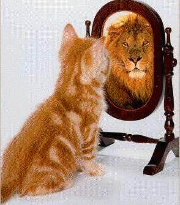 14。尊重弱者 / Respect the weaker 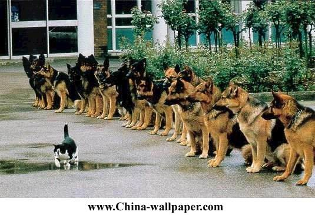 15。偶尔放纵自己一下 / Relax yourself from time to time 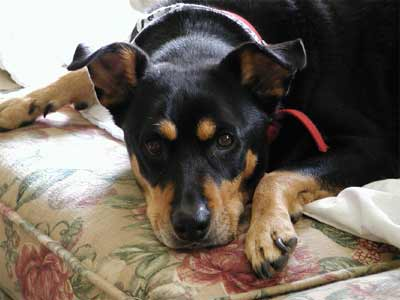 16。有空来论坛坐坐 / Get online during free time 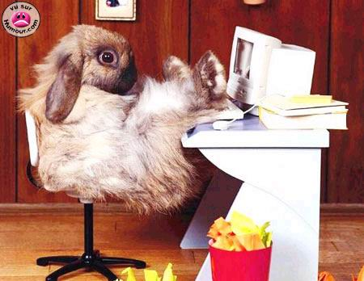 17。具备胆识和勇气 / Have wisdom as well as courage 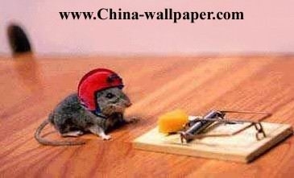 18。最后，不要财迷 / Finally, money is not everything |